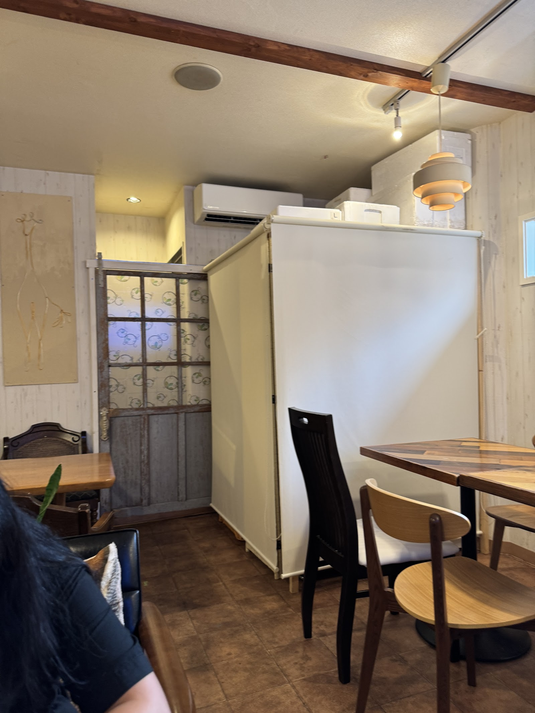
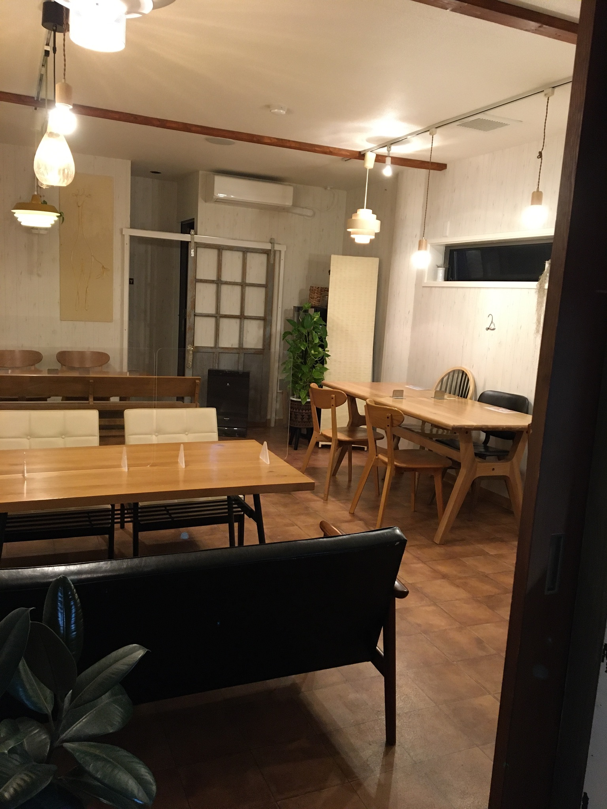

Concept
こだわり
ごはんCafe Moiでは、有機野菜や有機コーヒーなど、できるだけ体にやさしい素材を選んでお料理をお作りしています。
外食でありながら、どこかほっとする家庭的な味わいを大切に、彩り豊かな一皿・季節感のある定食を、日々ていねいにご用意しています。

Atmosphere
店内の雰囲気
木のぬくもりを感じる家具や照明でまとめた店内は、あたたかく落ち着いた雰囲気です。
お一人でのご利用から、ご家族・お子様連れでのご利用まで、それぞれのペースでゆったりとお過ごしいただけます。
Recommend
こんな方におすすめです
- 江戸川台駅の近くにお住まい・お勤めの方
- 体にやさしい、家庭的な食事を探している方
- ご家族やお子様連れで、ゆったり過ごしたい方
- お食事をお持ち帰りで楽しみたい方
ごはんCafe Moiのメニューや、来店方法もあわせてご覧ください。